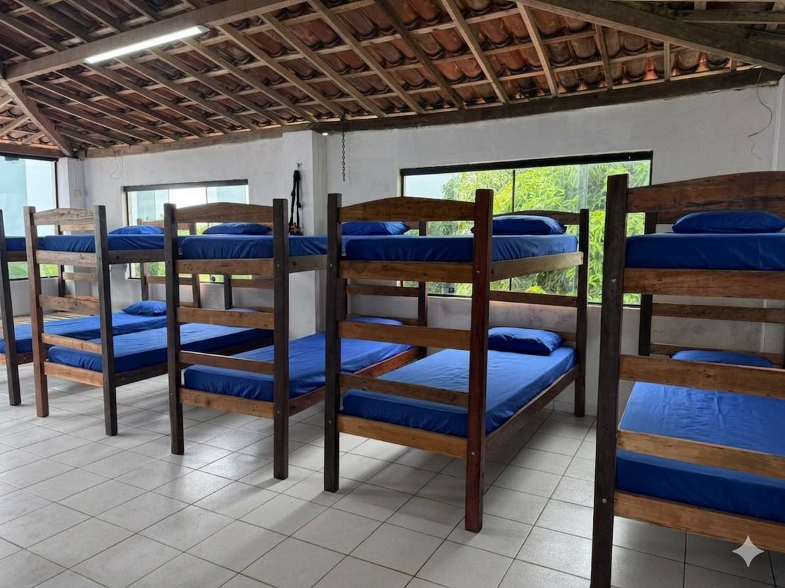
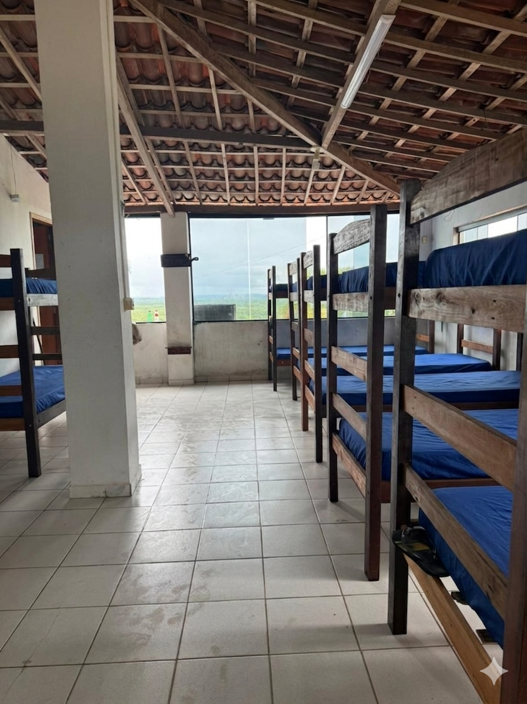

Não expomos dados
O primeiro contato deve conter apenas informações essenciais para retorno e orientação.
O Apoio Familiar PE/PB é um canal de orientação inicial para famílias em Pernambuco e Paraíba que buscam informações sobre comunidades terapêuticas, tratamento para dependência química e alcoolismo.
Ajudamos você a entender custos, prazos de contrato, regras de visita e próximos passos antes de decidir por uma internação — sem diagnóstico, sem promessa de cura, sem pressão.
Atendimento pelo WhatsApp conforme disponibilidade. Respondemos assim que possível dentro do horário comercial.
A orientação inicial deve proteger a família, o paciente e a própria decisão.
O primeiro contato deve conter apenas informações essenciais para retorno e orientação.
Dependência química e alcoolismo exigem avaliação, cuidado contínuo e responsabilidade.
Orientamos com clareza para que a família entenda custos, contrato e próximos passos.
Fotos de ambientes reais ajudam a reduzir dúvidas, mas não substituem a confirmação direta com a instituição responsável.
Ambiente externo com jardim, céu aberto e espaço de circulação.
Espaço externo usado como referência visual de acolhimento.

Exemplo de dormitório coletivo, conforme disponibilidade e regras da instituição.

Espaço de rotina, alimentação e convivência.

Outra visão de acomodação, útil para a família entender melhor a estrutura.
As fotos não representam promessa de vaga, resultado ou padrão único de atendimento. Cada instituição possui regras, disponibilidade, equipe, contrato e rotina próprios.
Muitas famílias chegam até nós em um momento de medo, desgaste e urgência.
Às vezes já houve recaídas, conflitos, promessas não cumpridas, perdas financeiras, agressividade, isolamento ou sofrimento dentro de casa. Nessa hora, a família costuma buscar uma solução rápida, mas nem sempre sabe quais perguntas fazer antes de escolher uma clínica ou comunidade terapêutica.
Nosso papel é ajudar a organizar essas informações antes da decisão. A decisão continua sendo da família. A nossa função é oferecer clareza.
Como funciona a internação e quais etapas devem ser confirmadas.
Quais perguntas fazer antes de assinar ou enviar qualquer pagamento.
Como não decidir apenas pelo desespero e pela urgência emocional.
Organizamos os principais pontos que precisam estar claros antes de qualquer decisão.
Entrada, mensalidade, forma de pagamento, vencimentos, itens inclusos e possíveis custos adicionais.
Contratos comuns de 90, 180 ou mais dias, além de desistência, saída antecipada e prorrogação.
Visita, contato telefônico, envio de pertences, documentação, rotina interna e comunicação durante o tratamento.
Dependência química, alcoolismo, recaídas, resistência ao tratamento e conflitos familiares exigem cuidado na análise.
Quando houver compatibilidade entre a necessidade da família e a disponibilidade de instituições parceiras, podemos facilitar o primeiro contato para que a família receba informações diretamente da unidade responsável.
Você entende melhor as informações antes de conversar diretamente com a unidade responsável.
Um fluxo simples para transformar urgência em decisão mais clara, organizada e responsável.
A família chama pelo WhatsApp ou preenche o formulário com informações básicas.
Buscamos compreender região, urgência, tipo de dificuldade e momento da família, sem substituir avaliação profissional.
Organizamos dúvidas sobre custo, contrato, tempo de tratamento, rotina, visitas e contato familiar.
Quando houver compatibilidade entre a necessidade da família e a disponibilidade de instituições parceiras, podemos facilitar o primeiro contato para que a família receba informações diretamente da unidade responsável.
A família avalia as informações, tira dúvidas diretamente com a instituição e decide com mais clareza.
Sem promessa de resultado. Sem decisão no escuro. Sem exposição pública de dados.
Para famílias que buscam orientação sobre tratamento para dependência química ou alcoolismo e precisam entender melhor como funciona uma internação em comunidade terapêutica.
Em caso de risco imediato, surto, overdose, ameaça à vida ou emergência médica, procure atendimento de urgência, SAMU, hospital, CAPS ou serviço especializado da sua região.
Este canal não substitui atendimento médico, psicológico, psiquiátrico, jurídico ou serviço de emergência.
O direcionamento depende da análise da solicitação e da disponibilidade real de instituições parceiras.
Recife, Olinda, Jaboatão dos Guararapes, Paulista, Cabo de Santo Agostinho, Caruaru, Petrolina, Garanhuns e demais municípios da Região Metropolitana e do interior de Pernambuco, conforme disponibilidade de instituições parceiras.
João Pessoa, Campina Grande, Patos, Bayeux, Santa Rita e outras cidades da Paraíba, conforme análise da solicitação e disponibilidade.
Podemos orientar inicialmente famílias de outros estados, mas sempre deixando claro os limites do atendimento e da disponibilidade de instituições.
Antes de qualquer internação, a família precisa entender claramente o que está contratando.
Nosso trabalho é orientar, organizar informações e facilitar o contato inicial.
Respostas objetivas para reduzir insegurança no primeiro contato.
Não. Somos um canal de orientação inicial e direcionamento responsável. Nosso papel é ajudar a família a entender informações importantes antes de decidir por uma internação.
Não. A disponibilidade depende da região, do perfil da solicitação e da confirmação da instituição parceira.
Não. Diagnóstico, prescrição e decisões clínicas devem ser feitos por profissionais habilitados. Nossa função é orientar administrativamente e organizar as dúvidas da família antes da decisão.
O primeiro contato é feito com discrição. Recomendamos que a família envie apenas informações essenciais no início da conversa. Não compartilhamos dados pessoais sem autorização.
Os períodos mais comuns são 90 ou 180 dias, mas isso pode variar conforme a instituição, o contrato e a necessidade do caso.
Pergunte sobre entrada, mensalidade, tempo de contrato, regras de saída antecipada, visitas, contato com a família, itens inclusos, custos extras, documentação e política de cancelamento.
Você será direcionado para uma conversa no WhatsApp. A partir das informações iniciais, buscamos entender a situação de forma geral e orientar quais pontos a família deve analisar antes de tomar uma decisão.
Não. Recomendamos enviar apenas o essencial no início. Informações mais sensíveis devem ser tratadas com cuidado e somente quando forem realmente necessárias para orientação.
Clínicas de reabilitação geralmente possuem equipe médica e psiquiátrica e podem ser indicadas para casos com necessidade de desintoxicação ou acompanhamento clínico intensivo. Comunidades terapêuticas são ambientes residenciais com foco em recuperação social e comportamental, com contratos mais longos, de 90, 180 dias ou mais. Orientamos a família a entender qual perfil é mais adequado antes de decidir.
A internação involuntária é um tema sensível e depende de avaliação médica, critérios legais e responsabilidade da instituição habilitada. Este canal não realiza internação direta, não decide conduta clínica e não substitui orientação médica ou jurídica. Podemos orientar a família sobre perguntas importantes, documentação e próximos passos para buscar o serviço adequado.
Alguns municípios de Pernambuco e Paraíba possuem convênios com comunidades terapêuticas via CAPS ou SUAS, mas a disponibilidade é limitada. Orientamos a família a verificar junto à Secretaria Municipal de Saúde da sua cidade quais opções públicas estão disponíveis, além das alternativas particulares.
O CAPS é o Centro de Atenção Psicossocial, um serviço público e gratuito voltado para tratamento ambulatorial de saúde mental, inclusive dependência química. Em casos urgentes ou para quem não tem condição de arcar com tratamento particular, o CAPS é uma das principais portas de entrada públicas disponíveis em muitos municípios.
Podemos orientar inicialmente pelo WhatsApp, mas não substituímos emergência médica, SAMU, hospital, CAPS, atendimento psiquiátrico ou serviços de segurança em situações de risco imediato.
Não. Dependência química e alcoolismo são questões complexas. O tratamento pode ajudar, mas o resultado depende de vários fatores, incluindo participação do paciente, apoio familiar, continuidade do cuidado e prevenção de recaídas.
Você não precisa expor tudo no primeiro contato. Envie apenas o essencial para que possamos orientar os próximos passos com discrição e responsabilidade.